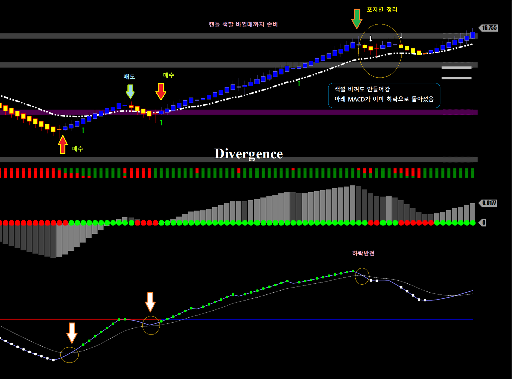
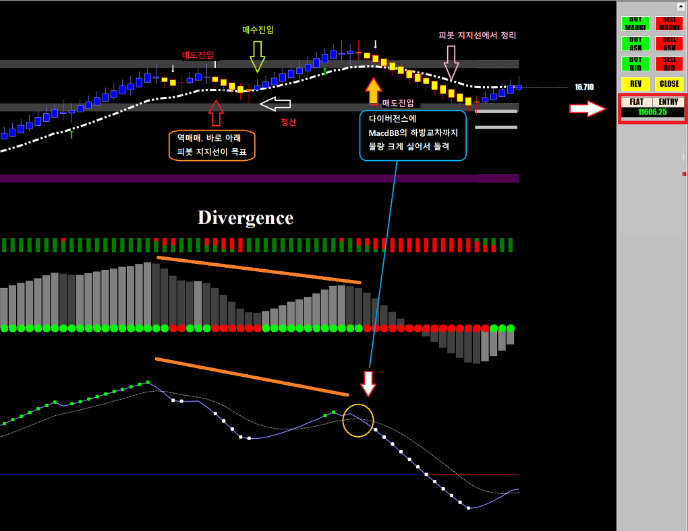
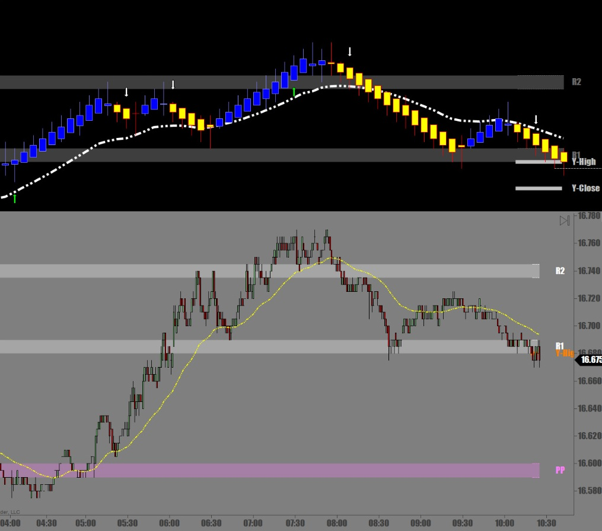
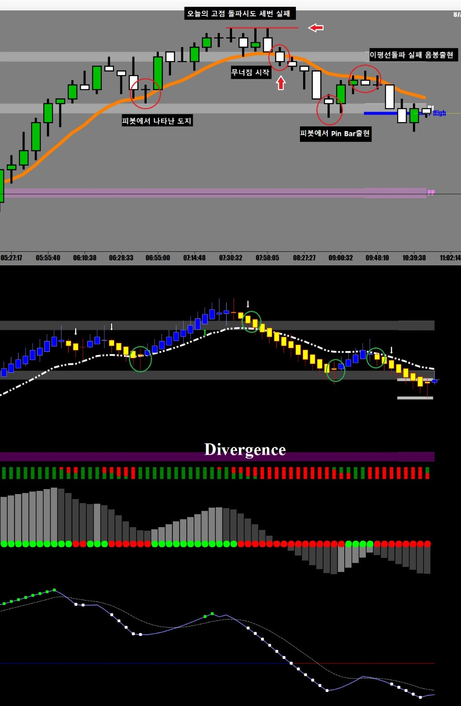

해외선물 - [SI] 닌자트레이더 UniRenko와 HeikenAhi
어제 저녁 늦게까지 구리선물을 매매하느라 새벽에 자서
오늘은 새벽장은 놓치고 오전장에 SI를 매매
매매를 하다보면 장중에서 여러번의 매매신호가 뜨는데
모든 신호가 똑같은 성공확률이 있지는 않다
어떤 경우 신호가 나오긴 나왔는데 역매매라 물량을 줄이고 적게먹고 나와야 할때도 있고
어떤 신호는 성공확률이 거의 90% 이상인 신호도 있다
신호가 나올때 항상 같은 양을 매매하기 보다는
신호의 종류에 따라 물량을 조절하는게 좋다
오늘 막판매매 간단 요약
아래 차트에서보면 첫번째 매매(화살표)는 역매매이기 때문에 10계약으로 들어갔음
오늘의 메인 피봇에서 전량 매도
두번째 매매는 메인피봇을 뚫고 올라탔다가 밀렸는데 피봇에서 지지받고 다시 반등 시작할 때
이건 최소 80점 짜리 신호
물량 실어서 30 계약..여기서 3틱먹고 일단 반절 덜어내고 존버
여기서 오늘의 대박.

두번째 차트
아래 차트에서 나온 첫번째 신호도 역매매라 적은양 적은 수익으로 마감
피봇까지 내려왔을 때 정리 3틱 수익으로 끝
두번째 신호는 이평선 지지받고 다시 진행하는 신호지만 Macd가 Negative 상황이라 반쪽짜리 신호
적은 물량으로 진입
세번째 매매는 역매매지만
Macd가 하방교차하는 순간이며
심각한 다이버전스까지 겹쳐있어서 매우 좋은 신호
큰 물량으로 진입

이런식으로 여러가지 도움되는 보조지표들을 다양하게 펼쳐놓고 매매를 할 때
진입을 결정하는 제일 중요한 요소는 물론 캔들 색깔이고
그 다음에 이평선과 현재가의 위치(이평선 위? 아래?)
그 다음에 보조지표들의 현재 상태를 참고로하는 수순임
매매에 있어 가장 중요한것은 매매방향.
어느쪽으로 들어갈지가 제일 중요함
그걸 결정하게 해주는 좋은 지표가 닌자트레이더 UniRenko의 색깔 변환임
이 매매를 1분봉으로 했다면?

똑같은 시간대에 두개의 차트를 놓고 보면
뭐 같은 스토리지만
닌자트레이더 UniRenko 차트를 사용할 경우
언제 들어가고 나올지가 색깔로 확실하게 보여주므로
진입 시점을 잡기가 훨씬 쉽다는걸 알 수 있다
또 다른 차트로 비교해보자

위의 볼륨차트로 매매를 할 경우 중요 지지(저항)에서 발생하는 캔들 패턴을
잘 찾아내야 한다
똑같은 경우 아래 단순무식 매매씨스템 차트에서는 그냥 색깔 바뀌면 들어가면 된다
닌자트레이더 UniRenko와 HeikenAhi가 만들어주는 매매신호가 매우 정확함을 알 수 있다